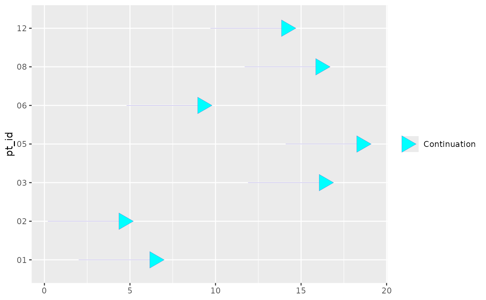

Arrows attached to the end of swimmer plot lanes can be used to denote the continuation of events such as ongoing treatment, implying that the activity or status extends beyond the plotted period.
Usage
geom_swim_arrow(
mapping = NULL,
data = NULL,
stat = "identity",
position = "identity",
...,
arrow_colour = "black",
arrow_head_length = unit(0.25, "inches"),
arrow_neck_length = NULL,
arrow_fill = NULL,
arrow_type = "closed",
lineend = "butt",
linejoin = "round",
na.rm = FALSE,
show.legend = NA,
inherit.aes = TRUE
)Arguments
- mapping
Set of aesthetic mappings created by
aes(). If specified andinherit.aes = TRUE(the default), it is combined with the default mapping at the top level of the plot. You must supplymappingif there is no plot mapping.- data
A data frame prepared for use with
geom_swim_arrow(). Required.- stat
The statistical transformation to use on the data for this layer. When using a
geom_*()function to construct a layer, thestatargument can be used to override the default coupling between geoms and stats. Thestatargument accepts the following:A
Statggproto subclass, for exampleStatCount.A string naming the stat. To give the stat as a string, strip the function name of the
stat_prefix. For example, to usestat_count(), give the stat as"count".For more information and other ways to specify the stat, see the layer stat documentation.
- position
Position adjustment. ggswim accepts either
"stack"or"identity"depending on the use case. Default is"identity".- ...
Other arguments passed on to
layer()'sparamsargument. These arguments broadly fall into one of 4 categories below. Notably, further arguments to thepositionargument, or aesthetics that are required can not be passed through.... Unknown arguments that are not part of the 4 categories below are ignored.Static aesthetics that are not mapped to a scale, but are at a fixed value and apply to the layer as a whole. For example,
colour = "red"orlinewidth = 3. The geom's documentation has an Aesthetics section that lists the available options. The 'required' aesthetics cannot be passed on to theparams. Please note that while passing unmapped aesthetics as vectors is technically possible, the order and required length is not guaranteed to be parallel to the input data.When constructing a layer using a
stat_*()function, the...argument can be used to pass on parameters to thegeompart of the layer. An example of this isstat_density(geom = "area", outline.type = "both"). The geom's documentation lists which parameters it can accept.Inversely, when constructing a layer using a
geom_*()function, the...argument can be used to pass on parameters to thestatpart of the layer. An example of this isgeom_area(stat = "density", adjust = 0.5). The stat's documentation lists which parameters it can accept.The
key_glyphargument oflayer()may also be passed on through.... This can be one of the functions described as key glyphs, to change the display of the layer in the legend.
- arrow_colour
The outline colour of the arrow segment and arrow head when using fixed arrow parameters.
- arrow_head_length
A grid unit specifying the length of the arrow head (from tip to base).
- arrow_neck_length
A numeric value specifying the neck length from the end of the segment to the base of the arrow head when
xis not mapped.- arrow_fill
The fill colour of the arrow head when using fixed arrow parameters and a closed arrow type.
- arrow_type
One of
"open"or"closed"indicating whether the arrow head should be drawn as an open or closed triangle when using fixed arrow parameters.- lineend
Line end style (round, butt, square).
- linejoin
Line join style (round, mitre, bevel).
- na.rm
If
FALSE, the default, missing values are removed with a warning. IfTRUE, missing values are silently removed.- show.legend
logical. Should this layer be included in the legends?
NA, the default, includes if any aesthetics are mapped.FALSEnever includes, andTRUEalways includes. It can also be a named logical vector to finely select the aesthetics to display. To include legend keys for all levels, even when no data exists, useTRUE. IfNA, all levels are shown in legend, but unobserved levels are omitted.- inherit.aes
If
FALSE, overrides the default aesthetics, rather than combining with them. This is most useful for helper functions that define both data and aesthetics and shouldn't inherit behaviour from the default plot specification, e.g.annotation_borders().
Details
Please note that geom_swim_arrow() requires a data argument and does not
inherit data like other functions.
geom_swim_arrow() supports two approaches for defining arrow appearance:
By mapping the
arrowaesthetic and supplying values withscale_arrow_discrete().By supplying
arrow_colour,arrow_fill, andarrow_typedirectly as fixed parameters.
When the arrow aesthetic is mapped, arrow appearance is controlled by
scale_arrow_discrete() and takes precedence over fixed arrow parameters.
geom_swim_arrow() also supports two approaches for defining arrow extent:
By mapping both
xandxend, in which case the arrow neck is drawn fromxtoxend.By mapping only
xend, in which casexendis treated as the swimmer lane endpoint and the arrow neck is extended to the right usingarrow_neck_length.
If x is mapped, arrow_neck_length is ignored.
Aesthetics
geom_swim_arrow() understands the following aesthetics (required aesthetics
are in bold):
xyxendalphaarrowcolourgrouplinetypelinewidth
The arrow aesthetic is used to map discrete arrow styles via
scale_arrow_discrete().
Legend behaviour
To display arrows as their own legend component, map a value to the arrow
aesthetic and add scale_arrow_discrete(). If a single legend entry is
desired, map a constant such as arrow = "Continuation".
Fixed versus scaled arrow styling
If the arrow aesthetic is not mapped, arrow appearance can be set directly
with arrow_colour, arrow_fill, and arrow_type.
If the arrow aesthetic is mapped, arrow appearance is instead determined by
scale_arrow_discrete(), and the fixed arrow parameters are used only as a
fallback.
Underlying geom
geom_swim_arrow() is a wrapper for ggplot2::geom_segment() and supports
much of the same functionality.
Examples
# Set up data for arrows
arrow_data <- patient_data |>
dplyr::left_join(
end_study_events |>
dplyr::select(pt_id, label),
by = "pt_id"
) |>
dplyr::select(pt_id, end_time, label) |>
dplyr::filter(.by = pt_id, end_time == max(end_time)) |>
dplyr::filter(!is.na(label)) |>
unique()
# Parameter-driven arrow styling
geom_swim_arrow(
data = arrow_data,
mapping = aes(xend = end_time, y = pt_id),
linewidth = 0.1,
arrow_neck_length = 5,
arrow_head_length = grid::unit(0.25, "inches"),
arrow_colour = "slateblue",
arrow_fill = "cyan",
arrow_type = "closed"
)
#> mapping: y = ~pt_id, xend = ~end_time
#> geom_swim_arrow: arrow.fill = cyan, arrow_colour = slateblue, arrow_head_length = 0.25, arrow_neck_length = 5, arrow_type = closed, lineend = butt, linejoin = round, na.rm = FALSE
#> stat_identity: na.rm = FALSE
#> position_identity
# Mapped start and end positions
geom_swim_arrow(
data = arrow_data,
mapping = aes(x = start_time, xend = end_time, y = pt_id),
linewidth = 0.1,
arrow_head_length = grid::unit(0.25, "inches"),
arrow_colour = "slateblue",
arrow_fill = "cyan",
arrow_type = "closed"
)
#> mapping: x = ~start_time, y = ~pt_id, xend = ~end_time
#> geom_swim_arrow: arrow.fill = cyan, arrow_colour = slateblue, arrow_head_length = 0.25, arrow_neck_length = NULL, arrow_type = closed, lineend = butt, linejoin = round, na.rm = FALSE
#> stat_identity: na.rm = FALSE
#> position_identity
# Scale-driven arrow styling with a separate legend entry
ggplot2::ggplot() +
geom_swim_arrow(
data = arrow_data,
mapping = ggplot2::aes(
xend = end_time,
y = pt_id,
arrow = "Continuation"
),
linewidth = 0.1,
arrow_neck_length = 5,
arrow_head_length = grid::unit(0.25, "inches"),
show.legend = c(arrow = TRUE)
) +
scale_arrow_discrete(
limits = "Continuation",
colours = "slateblue",
fills = "cyan",
types = "closed",
name = NULL
)
